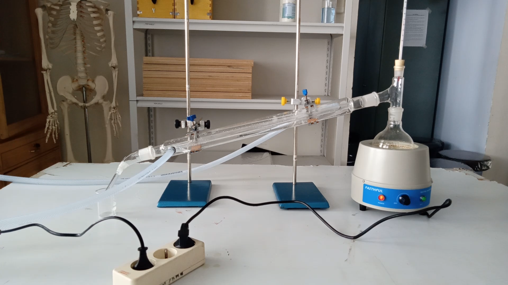

Klasifikasi Materi dan Perubahannya

Pemisahan campuran
- Peserta didik dapat menjelaskan macam - macam pemisahan campuran dengan menggunakan metode distilasi
Macam - macam pemisahan campuran metode distilasi
Distilasi ada beberapa macam diantaranya adalah distilasi sederhana, distilasi fraksionisasi, dan distilasi uap. Berikut ini adalah penjelasan mengenai macam-macam distilasi:
-
Distilasi sederhana, digunakan untuk memisahkan materi cair yang memiliki titik didih rendah, atau memisahkan materi cair dengan materi padat. Destilasi sederhana adalah salah satu cara pemurnian materi cair yang tercemar oleh materi padat atau materi cair lain dengan perbedaan titik didih yang cukup besar. Contoh dari distilasi sederhana adalah campuran air dengan serbuk rasa buah.

Gambar 1. Contoh distilasi sederhana -
Distilasi fraksionisasi atau distilasi bertingkat adalah proses pemisahan campuran ke dalam bagian-bagian dengan titik didih yang makin lama makin tinggi yang selanjutnya pemisahan bagian-bagian ini dimaksudkan untuk distilasi ulang. Perbedaan distilasi fraksionasi dan distilasi sederhana adalah adanya kolom fraksionasi. Pada kolom ini terjadi pemanasan secara bertahap dengan suhu yang berbeda-beda pada setiap plate atau tahapnya.
Pemanasan yang berbeda-beda ini bertujuan untuk pemurnian distilat yang lebih dari tahap-tahap di bawahnya. Contohnya minyak mentah yang menjadi bahan bakar alat transportasi.

Gambar 2. Contoh distilasi fraksionisasi -
Distilasi uap dapat digunakan untuk campuran yang tidak larut dalam air di semua suhu, tapi dapat di lakukan distilasi dengan menggunakan uap air. Aplikasi dari distilasi uap adalah untuk mengekstrak beberapa produk alam seperti minyak sitrus dari lemon atau jeruk, dan untuk ekstraksi minyak parfum dari tumbuhan.

Gambar 3. Contoh distilasi uap
Kelebihan dari metode distilasi adalah dapat meghasilkan materi yang benar-benar murni atau tidak ada materi lain yang tercampur dalam materi tersebut dan dapat memisahkan campuran yang mengandung banyak komponen materi asalkan materi yang tercampur memiliki titik didih yang berbeda-beda.